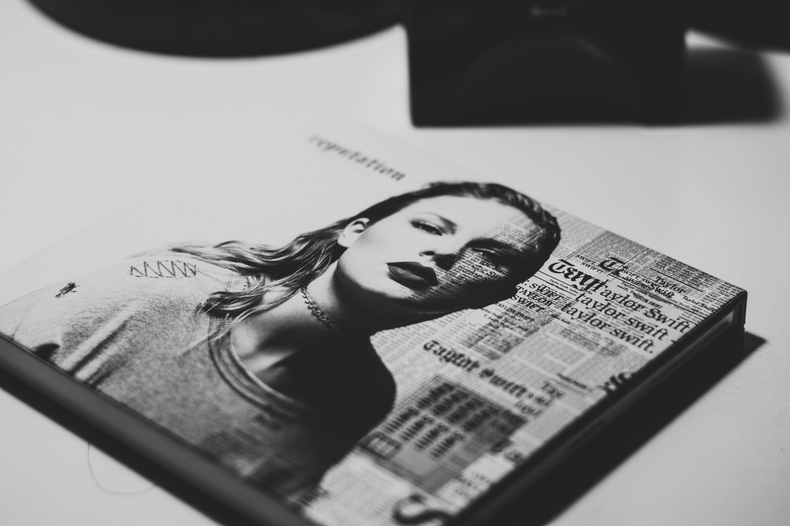

Taylor Swift Book Collection
From deeply researched biographies to lyric-inspired journals and fan art anthologies, explore the ultimate bookshelf for any Swiftie.
Explore the Collection

Top Picks in the Collection
📖 Swift: The Biography
An inspiring look at Taylor’s rise from country roots to pop superstardom. A must-read for fans who want the full story.
📝 Lyric Lover’s Journal
A beautiful journal filled with selected lyrics, writing prompts, and space for your own Taylor-inspired thoughts.
🎨 Fan Art Anthology
A curated collection of fan-made art and essays, this book celebrates the creativity and passion of the Swiftie community.